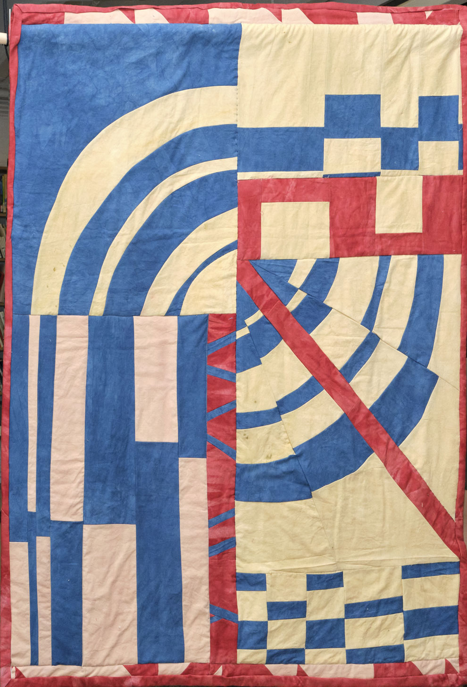
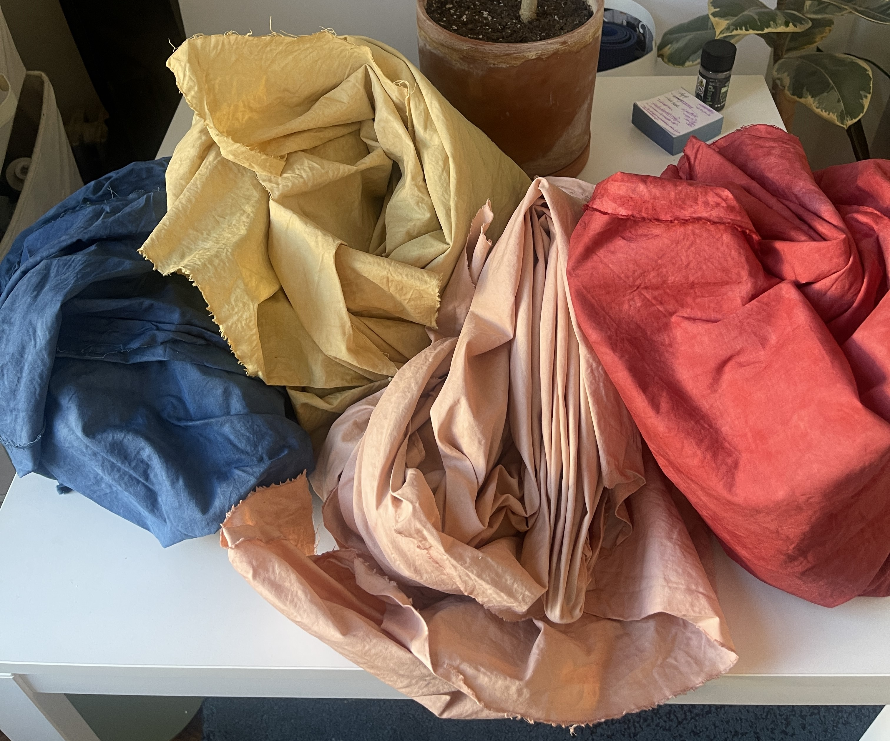
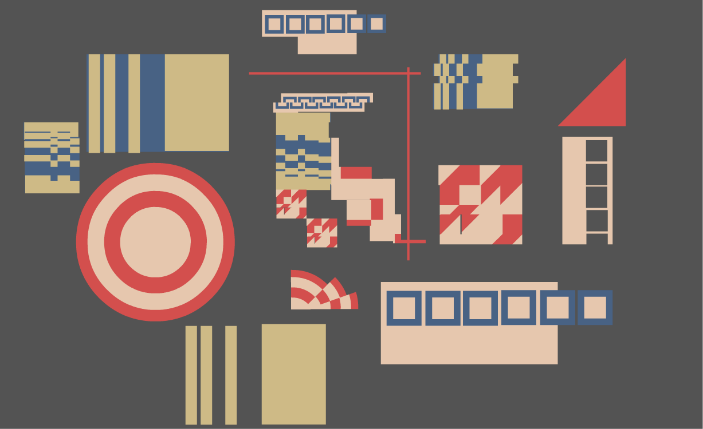
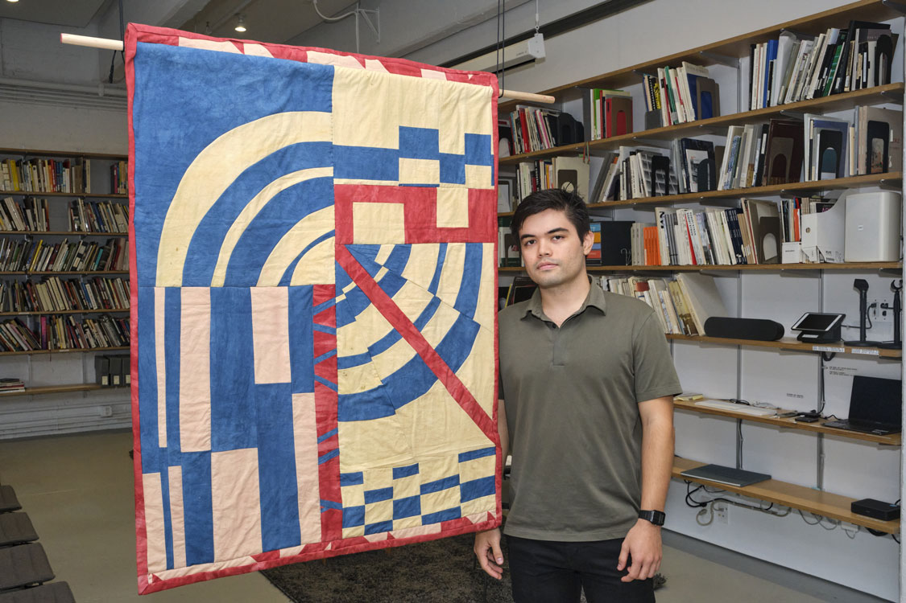

Quilting The Lightning Field
Dia Art Institution
2024
I was accepted to fulfill a project that involved creating a quilt
as a way to reproduce an experience, with hopes that the experience
can be circulated through the quilt as it changes hands from owner to owner.
I am particularly interested in the unique properties quilts have as
historical documents and their ability to transmit lore as they are
circulated. I’d also like to explore how quilts can embed local ecological
and botanical knowledge through the use of natural materials. My interest in
quilting arises from influences such as the Gee’s Bend quilts, the underground
railroad quilts, and imaginative wedding quilts. To me, these works convey how
one’s histories may be deeply intertwined with intuition and myth and
that this way of understanding the world can reveal more about our
own nature than empirical reasoning can.
For this project, supported by Dia Art Institution, other applicants and I were taken to
Walter De Maria's The Lightning Field. There we conducted necessary research in order to
fulfill our proposed projects. Upon completion, we presented our projects in a panel to the Dia Community.





